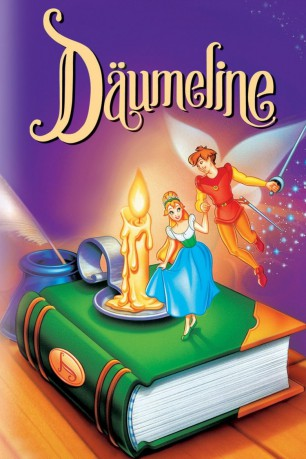

#4123 Däumeline
 gesehen am 14.10.2016
gesehen am 14.10.2016
 
 IMDB-Wertung: 6.3 / 10
IMDB-Wertung: 6.3 / 10  Metascore: 0
Metascore: 0 
Die 16jährige Däumeline, ihrem Namen gemäß kaum größer als ein Daumen, verliebt sich in einen wunderschönen Elfenprinzen. Doch schon nach dem ersten Rendez-Vous wird das Mädchen von hinterlistigen Kröten entführt. Nachdem Däumeline in der Folge auch noch an allerlei häßliches Getier weiterverliehen wird, landet sie in den Pfoten eines Maulwurfs, der sie ehelichen will. Da erscheint endlich ihr geliebter Prinz und kann sie im letzten Moment retten.
Jahr: 1994
Dauer: 86 Minuten
FSK: 0
Land: Irland Studio: Warner Home VideoTonspuren: DTS - ,
Untertitel: Deutsch,
Auflösung: 1080p (1920x1040) Größe: 6717 MB
Genre: Animation/Trick, Familie, Fantasy, Musical, Liebe
Regisseur: Don Bluth, Gary Goldman
Drehbuch: Norman Snider
Soundtrack:
Darsteller:
- Gino Conforti als Jacquimo
- Barbara Cook als Mother
 Jodi Benson als Thumbelina
Jodi Benson als Thumbelina Will Ryan als Hero / Reverend Rat
Will Ryan als Hero / Reverend Rat June Foray als Queen Tabitha
June Foray als Queen Tabitha Kenneth Mars als King Colbert
Kenneth Mars als King Colbert- Gary Imhoff als Prince Cornelius
- Charo als Mrs., Ma Toad
 Loren Lester als Gringo
Loren Lester als Gringo Gilbert Gottfried als Mr. Beetle
Gilbert Gottfried als Mr. Beetle Neil Ross als Mr. Fox / Mr. Bear
Neil Ross als Mr. Fox / Mr. Bear- Carol Channing als Ms. Fieldmouse
 John Hurt als Mr. Mole
John Hurt als Mr. Mole Tony Jay als Cow , uncredited
Tony Jay als Cow , uncredited- Joe Lynch als Grundel
- Danny Mann als Mozo
- Kendall Cunningham als Baby Bug
- Tawny Sunshine Glover als Gnatty
- Michael Nunes als Li'l Bee
- Pat Musick als Mrs Rabbit
- Stevie Vallance als , uncredited
Datei: X:\Kinder Filme (A-F)\Däumeline (1994, FSK0, 1920x1040).mkv seit 25.07.2016
Festplatte: Kinder-Filme+Trick
 Es gibt insgesamt 68 Filme in der Gruppe 'Kinder Filme (A-F)'
Es gibt insgesamt 68 Filme in der Gruppe 'Kinder Filme (A-F)'